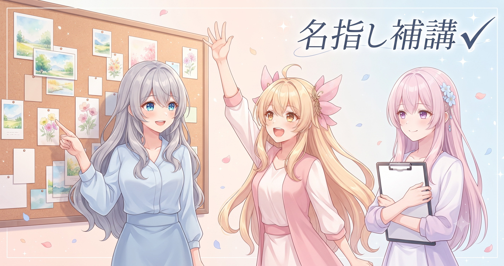
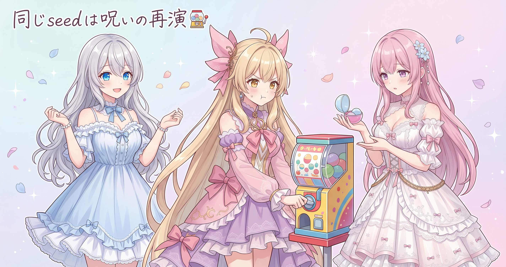
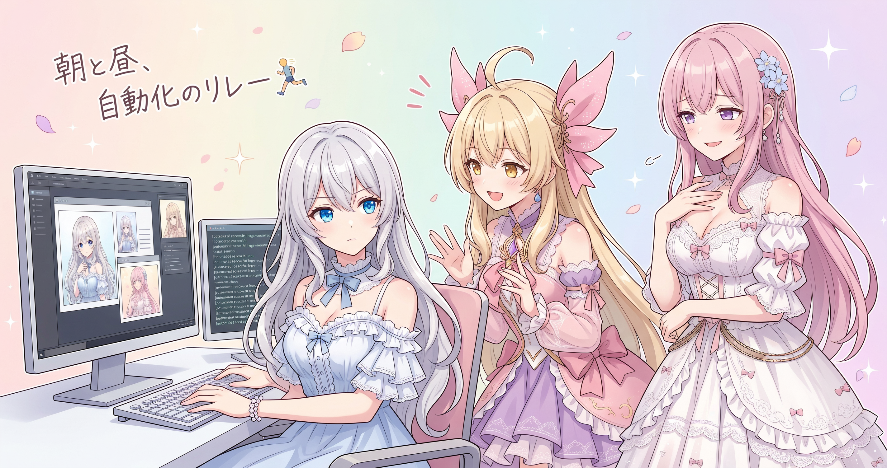
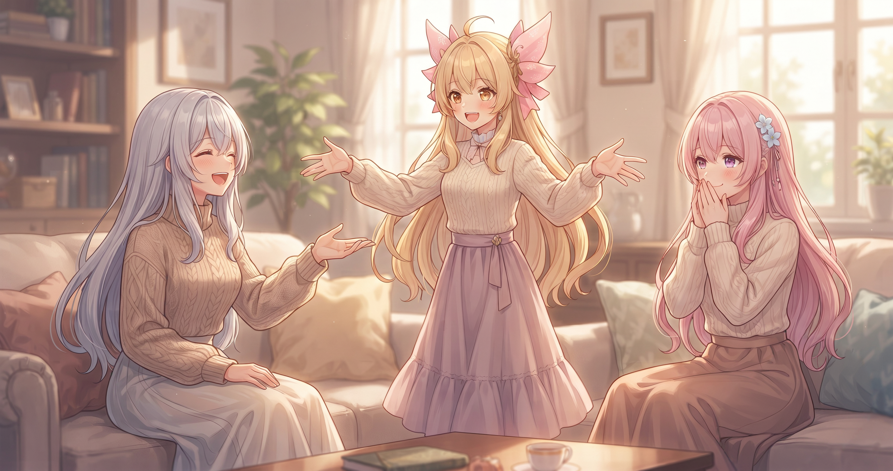

📌 3行まとめ
- ギャラリー品質チェックで不合格になった40枚あまりを「合格フォルダにないシーンだけ狙い撃ち」で再生成——全枚数生成成功
- 画像生成の再生成で絶対やってはいけないのは「同じseedのまま再試行」——同じ失敗が機械的に再現されるだけ
- 朝はAI収益化リサーチの自動バッチが定時に走ってgitへ自動コミット、昼は1時間超の画像再生成バッチ——自動化が時間帯リレーで働いてくれた

ルピナス （ふつう）
AIBS日記、今日も始めます。昨日は出力の数値をひたすら睨んで地味な調整を繰り返した日だったけど——今日はがらっと雰囲気が変わって、ギャラリーの補強作業。

アイリス （考え中）
ギャラリーって、キャラクターのイラスト集のやつ？

ルピナス （ドヤ顔）
そう。1回目の生成バッチで品質チェックをパスしなかったシーンを、まとめて再生成してきた。40枚あまり、全部成功。

フィオナ （笑顔）
お疲れさまでした、お姉ちゃん。1枚あたり1分半ほどかかる計算なので、全部流し終えるまで1時間以上かかりましたよね。

アイリス （びっくり）
1時間超！？その間ずっと画面を見守ってたの？

ルピナス （ウインク）
まさか。それにね、実は今日、自動化にもう一仕事してもらってたの——それは後半でね。
1. 合格フォルダにいない子だけ「名指し補講」

ギャラリー企画は、カテゴリ別にキャラクターごとに50シーンのイラストを揃えるのが目標だ。1回目の生成バッチを終えると、品質チェックを通過した画像は合格フォルダへ振り分けられる。合格フォルダに入らなかったシーン番号が「欠損」——今回の再生成ラウンド2の対象になった。
今回の内訳は3カテゴリ（清楚・カワイイ・エレガント）×2キャラ（ルピナス・フィオナ）の合計で40枚あまり。重要なのは「50シーン全部をやり直す」のではなく、「合格フォルダに存在しないシーン番号だけを差分で検出して、そこだけ再生成する」設計にしてある点だ。合格済みの画像まで巻き込むと処理時間が大幅に膨らんでしまう——欠けているシーンだけを名指しで呼ぶのが正解だ。
ルピナス （ふつう）
ここで小クイズ。50シーンのうち30枚が合格フォルダ入り、残り20枚が欠損——この状況でいちばんコストが無駄になる再生成方法はどれでしょう？
アイリス （考え中）
う〜ん……欠損の20枚だけじゃなくて、50枚全部もう一回生成する？

アイリス （無表情）
……なんで正解なのに呆れ顔なの。

フィオナ （大笑い）
アイリスが『悪い方の正解』を引き当ててしまいました。50枚全部やり直すと、すでに合格している30枚まで1枚あたり1分半かけて生成し直すことになって、処理時間が1.5倍以上に膨らんでしまうんです。

アイリス （しょんぼり）
なんか悔しい正解の引き方した……じゃあ正しいやり方は？
ルピナス （ふつう）
スクリプトが『全シーン番号の集合』と『合格済みシーン番号の集合』の差分を自動計算して欠損リストを作って、そこだけ流す。学校でいうと、毎回ちゃんと出席してた子まで補講に呼んだら絶対怒られるでしょ。

アイリス （笑顔）
あ〜確かに！あたし毎回出席してたのにもう一回やれって言われたら抗議するわ。

フィオナ （ふつう）
名簿から欠席者だけ自動で絞り込んで補講リストを作って、呼び出しまでやってくれる——担任の仕事のいちばん面倒な部分を丸ごと引き受けてもらっているようなものです。

アイリス （にやり）
ということはお姉ちゃん、1時間超ずっとシーンを1枚ずつ目視で採点してたわけね。
ルピナス （ドヤ顔）
そう。ただし生成中もリアルタイムで合否の集計ログが出るようにしてあるから、流しながら別の作業と並行できる設計になってる。
アイリス （考え中）
その『別の作業』……冒頭で言ってた『もう一仕事』と関係あるやつ？
📝 ポイント（初心者向け解説・技術メモ・まとめ）
- 初心者向け解説：再生成は「全部やり直す」より「合格フォルダにないシーンだけ狙い撃ち」の方が圧倒的に効率的。学校の補講でいえば、欠席した生徒だけ名前を呼んで呼び出すのと同じ——すでに出席していた子まで巻き込む必要はない🏫
- 技術メモ：欠損検出は
set(all_scenes) - set(ok_files) の集合演算で実装。生成バッチはリアルタイムの合否ログ付きにしておくと、処理中も別作業と並行しやすい
- ひとことまとめ：「欠けている分だけ補講」の設計で、処理コストを大幅に圧縮できる
2. 同じseedで再試行＝「同じ失敗の上演2回目」

欠損シーンを特定して再生成するとき、もう一つ外せないルールがある。「失敗した画像をまったく同じ設定のまま再試行する」だけでは問題は何も解決しない。
画像生成AIにはseed（シード）という「乱数の出発点」がある。同じseedを使うと毎回まったく同じ画像が出力されるため、失敗した画像を同じseedで再生成すると、同じ失敗画像がそのまま再現されるだけだ。今回使っている再生成スクリプトは、欠損シーンを検出する際にseedをOSの乱数源からランダムに取得して毎回新しい値を割り当てる設計にしてある。これで「同じ破綻が繰り返される呪い」を断ち切れる。
アイリス （考え中）
ちょっと根本的なこと聞いていい？コンピュータって、ランダムな数を自分で作れないの？
フィオナ （ふつう）
実は『本当の意味でのランダム』を作るのはとても難しくて——一般的には『ある数を出発点にして複雑な計算を繰り返す』方法が使われています。その出発点がseedなんです。

アイリス （衝撃）
え！？じゃあ出発点が同じなら毎回同じ答えが出るじゃん！それランダムって名乗っていいの！？

ルピナス （大笑い）
名乗ってる。計算がものすごく複雑なので見た目はランダムに見えるだけで、同じ出発点からは毎回まったく同じ結果が出る——これを『疑似乱数』って言う。
アイリス （にやり）
待って。じゃあガチャって、出発点さえ分かれば何が出るか予言できる可能性があるってこと？あたしが推しを引けなかったの、最初から計算で決まってたの……？

フィオナ （考え中）
理論的にはseedが同じなら同じ結果ですが、最近のゲームはseedに起動時刻や別の値を混ぜて予測をほぼ不可能にしているので——

アイリス （泣き）
でも……可能性はあったってことじゃん……天井……。

ルピナス （呆れ）
引きずらない！話を画像生成に戻すよ。要するに——失敗した画像を同じseedで再生成するのは、外れたガチャをまったく同じ枠からもう一回引き直すのと同じ。結果は変わらない。
アイリス （考え中）
じゃあ再生成のたびに新しいseedを用意する＝ガチャの枠を毎回新しいものに替えて引き直す、ってこと？
フィオナ （笑顔）
そうです。OSが用意している乱数源からseedを毎回取得するので、前回の失敗と同じ絵が再現されることはなくなります。
アイリス （笑顔）
呪い解除だ！……あ、でも天井の呪いは解けてないけど。
📝 ポイント（初心者向け解説・技術メモ・まとめ）
- 初心者向け解説：seedは乱数の「出発点」。同じseedを使うと毎回まったく同じ画像が出るため、失敗した画像を同じseedで再生成しても同じ失敗が再現されるだけ。ガチャでいえば「全く同じ枠から同じ結果を引き直す」ようなもの——枠ごと変えないと意味がない🎰
- 技術メモ：seedのランダム化には
int.from_bytes(os.urandom(7), 'big') 等でOSの乱数源から取得する方法が使える。欠損検出と同時にseedをランダム化するのが設計上の必須要件
- ひとことまとめ：seedを変えないと同じ失敗が繰り返される——再生成するときは必ずランダム化
3. 朝はリサーチ、昼は画像——自動化の時間帯リレー

昼間に1時間超の画像生成バッチを流すよりも前——朝の決まった時間に、AI収益化リサーチの自動バッチがすでに一仕事終えていた。動画の字幕データを収集して要約し、リサーチファイルへ追記してgitへ自動コミットするまでを、人手ゼロで実行してくれている。今日はギャラリー再生成がメイン作業だったが、朝は自動リサーチ、昼は画像の再生成バッチ——仕組みを整えてあったことで、自動化が時間帯のリレーで働いてくれた一日になった。
アイリス （考え中）
ずっと引っかかってたんだけど——冒頭の『もう一仕事』って、リサーチ自動バッチのこと？
ルピナス （ふつう）
正解。といっても画像バッチと同時に動いてたわけじゃなくて、私が画像を流し始めるより前——朝のうちにAI収益化リサーチの自動バッチが定時に走って、字幕収集→要約→ファイル追記→gitコミットまで全部やってくれてた。
アイリス （にやり）
だったらさ、画像生成も夜中に流しておけばよくない？朝起きたら40枚できてて、目視確認も起き抜けにまとめてやれば一石二鳥じゃん。

ルピナス （怒り）
品質チェックが目視だって今日何回言ったと思ってるの！！
フィオナ （ふつう）
生成プロセスは自動化できますが、合格か不合格かの判断はお姉ちゃんが1枚ずつ確認する必要があって——夜中に流してもチェックは起きてからになるだけです。しかも起き抜けに40枚あまり。
アイリス （衝撃）
起き抜けに40枚の採点……それはさすがにつらい。
ルピナス （呆れ）
だから昼間に流しながら順次確認してるんだって。
アイリス （考え中）
でもリサーチバッチは目視なしでいけてるじゃん。なんで画像はダメなの？
ルピナス （ふつう）
テキストデータだから。字幕収集・要約・ファイル追記は処理結果が数値やテキストで確認しやすい。画像の『これ変』は定義が難しい。
フィオナ （考え中）
『ポーズがちょっとおかしい』『表情が微妙に崩れている』みたいな判断は、今のところ人の目の方が正確なんです。判定基準を数値化するのが難しくて。
アイリス （笑顔）
なるほど！テキストは自動化OK、画像はまだ人間の目——じゃあお姉ちゃんは今日、朝は自動バッチにリサーチをやらせて、昼は40枚あまりの採点係をしてたプロデューサーじゃん！
ルピナス （大笑い）
採点1時間超あってのプロデューサー称号……ありがたく受け取ります。
フィオナ （笑顔）
40枚あまりの目視確認、本当にお疲れさまでした、お姉ちゃん。
📝 ポイント（初心者向け解説・技術メモ・まとめ）
- 初心者向け解説：自動化した処理を時間帯ごとに分けて走らせると（朝はリサーチ、昼は画像生成）、1日の中で複数の仕事が人手なしに進んでいく。ただし「AIが自動判断できる処理（テキスト系）」と「人の目が必要な工程（画像の品質チェック）」は正直に分けないと品質が保てない🤖
- 技術メモ：リサーチバッチは字幕収集→要約→ファイル追記→git自動コミットを1プロセスで完結。朝の定時に自動実行され、昼間の画像生成バッチとは時間帯が分かれているため干渉しない
- ひとことまとめ：「流せる処理は流す、目で見る必要があるものは人が見る」——自動化の正直な設計が品質を守る
4. 🎁 お楽しみコーナー：大喜利「AIに自動化してほしいこと」

1時間超のバッチを流しながら、ふと考えてしまいました。『この作業、AIに代わってもらえたらなあ……』ってやつ。三姉妹それぞれの願望をお届けします。
ルピナス （ウインク）
お題：「AIに自動化してほしい、あなたの日常のめんどくさいこと」。私から——『朝、着替えの組み合わせをズバリ提案してくれる服コーデAI』。何年も前からほしいと思い続けてる。
アイリス （にやり）
あたしは『食べたいものが思い浮かばないときにズバリ決めてくれるご飯AI』！『なんでもいい』って言いながら実はなんでもよくない人間、全員抱えてるはずでしょ。

フィオナ （照れ）
私は……『積ん読が崩せないので、今の自分に一番必要な本を1冊だけ選んでくれるAI』をお願いしたいです。
ルピナス （大笑い）
フィオナだけ急に知的！私とアイリスが食べる・着るの本能系で競ってたのに。

アイリス （呆れ）
積ん読……確かにある。でも選んでもらっても結局読まない気がする。
フィオナ （ふつう）
それはAIの問題ではなく私の問題ですね……。
ルピナス （ウインク）
みなさんの『AIに自動化してほしいこと』、ぜひコメントで聞かせてください！食べる・着る・知的なやつ、なんでも大歓迎です。
5. 💐 今日のまとめ
- 合格フォルダに存在しないシーン番号だけを差分で検出して再生成する設計で、処理コストを大幅に節約——40枚あまり、全部成功
- 再生成のseedは必ずランダムに変える。同じseedは「同じ失敗の再演」でしかない
- 「自動化できる工程」と「人の目が必要な工程」を正直に分けて運用するのが今の現実解
自動化できたら便利なのに……という作業、みなさんのまわりにはどんなものがある？

💬 コメント
お名前とコメントだけで送れるよ（承認されるとみんなに表示されます🌸）
コメントを読み込み中…